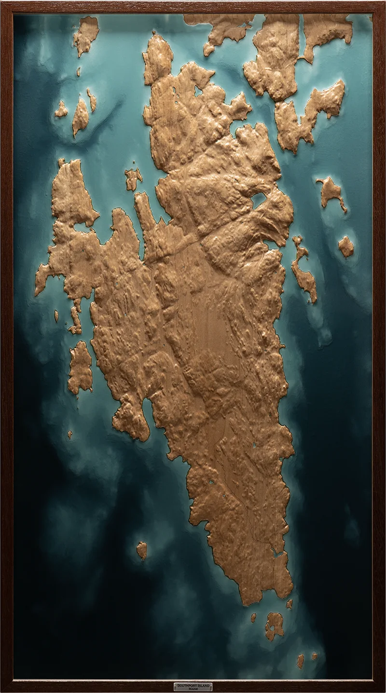

Southport Island
Maine
Relief of Southport Island, Maine, carved in hard maple and framed in mahogany. The carved surface follows a coastal island of narrow tidal passages, sheltered coves, and exposed shoreline. Translucent resin fills the harbors, coves, and tidal cuts that connect Southport Island to the Sheepscot River and Boothbay Harbor.
Shaping of Place
Southport Island’s landscape is the product of two geological systems meeting at a right angle. Ancient tectonic compression created northeast-to-southwest fault lines and fracture zones in coastal Maine’s bedrock. Later, during the Pleistocene, the Laurentide Ice Sheet moved across the region on a different path, smoothing and scouring the surface as it advanced and retreated.
As ice melted, water followed the weakened lines in the bedrock, deepening pre-existing fractures into narrow passages and coves. The result is an orthogonal coastal landscape, with linear features that read almost as a grid: Townsend Gut cutting between island and mainland, Decker’s Cove entering from the northeast, and Ebenecook Harbor opening into angular coves and protected water.
Those same cuts shape how water moves through Southport today. The narrow, deep passages function as hydraulic nozzles for the Gulf of Maine’s tides. As a large tidal volume moves through tight, rock-walled channels like Townsend Gut, the fixed walls of the passage force the current to accelerate. Standing waves, ripping water, current reversals, and brief slack periods all follow from that constricted geometry.
Southport’s harbors, coves, navigability, and hazards grow from the same geological foundation. The island is shaped by ancient structure, glacial modification, and the daily pressure of tidal water moving through the forms they left behind.

Southport relief, full composition.

Detail including Townsend Gut and Decker's Cove.

Installed relief, angled view.